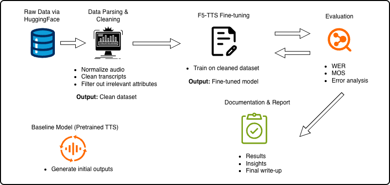
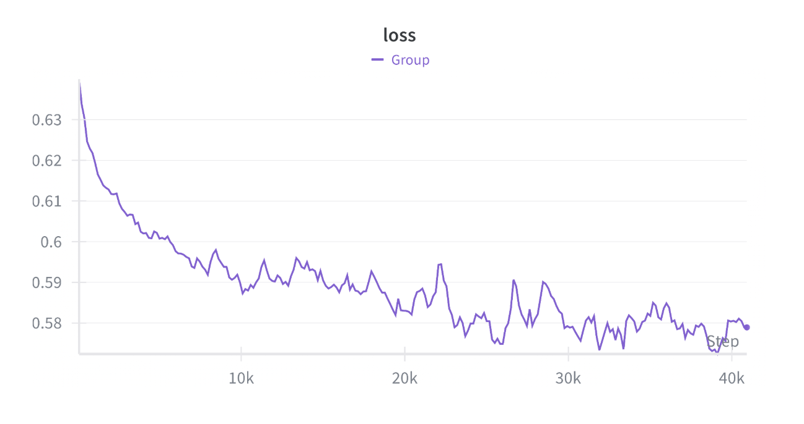

This project plans on creating a multi-dialect Text-to-Speech (TTS) System for Vietnamese. This will be achieved by utilizing a continuous flow-matching approach on a dialect annotated dataset in order to achieve a higher degree of naturalness and intelligibility compared to traditional pipelines. To evaluate the framework’s performance, the project will measure overall speech intelligibility using Word Error Rate (WER) and assess dialect accuracy using a dedicated dialect classifier to verify if the synthesized speech matches the target prompt. The expected outcome is a speech synthesis system capable of generating distinct Vietnamese dialects using minimal reference audio.
This figure illustrates the overall pipeline for building and evaluating a Vietnamese dialect-aware text-to-speech (TTS) system.

The workflow begins with collecting raw speech data from existing online sources, which are then processed through a data parsing and cleaning stage. During this stage, audio files are standardized (e.g., sampling rate normalization), transcripts are cleaned and aligned, and low-quality or inconsistent samples are filtered out to ensure dataset reliability. The cleaned dataset is first used to generate outputs from a baseline pre-trained TTS model, providing a reference point for performance comparison. The primary modeling stage involves fine-tuning the F5-TTS model on the curated dataset to better capture dialect-specific phonetic and linguistic variations across Vietnamese regions. Following training, the model is evaluated using both quantitative and qualitative metrics. Objective measures such as Word Error Rate (WER) are used to assess transcription accuracy, while subjective evaluations such as Mean Opinion Score (MOS) and qualitative error analysis are used to evaluate naturalness and speaker consistency. These evaluation results inform iterative improvements, creating a feedback loop that guides further model refinement. Finally, the pipeline concludes with documentation and reporting, where experimental results, model performance comparisons, and key insights are consolidated into a comprehensive report. Each stage of the pipeline is collaboratively developed, with responsibilities distributed across data processing, model training, evaluation, and documentation to ensure a modular and reproducible system design.
Despite rapid advancements in Text-to-Speech (TTS) technology, Vietnamese still remains underrepresented as a low-resource language. This disparity is particularly evident when attempting to synthesize diverse regional dialects. The strict lexical tones and significant phonetic shifts between Northern, Central, and Southern Vietnamese present complex acoustic challenges that traditional synthesis pipelines and English-centric models struggle to resolve without dedicated, dialect-aware fine tuning. To address this gap, this project proposes a multi-dialect Vietnamese TTS system by fine-tuning the Fairytaler that Fakes Fluent and Faithful speech with Flow Matching (F5-TTS) architecture.
In recent years, TTS systems have rapidly improved in their naturalness and intelligibility with paradigms like continuous flow matching and audio language models. However, most of these models are based on popular, high resource languages such as English and Mandarin. Previous work has focused on dialect identification and speech recognition for Vietnamese and most existing Vietnamese speech datasets were designed for Automatic Speech Recognition (ASR) and Dialect Identification (DI). However, less attention has been given to generating various dialects with TTS models. For this project, we investigated whether a TTS model trained on northern, central, and southern Vietnamese dialects can accurately generate dialect-specific acoustic characteristics.
There has been little investigation into how multi-dialect training affects TTS systems. It is unclear whether a TTS model trained on multiple Vietnamese dialects can preserve dialect-specific pronunciation patterns or whether the system tends to produce a more standardized or dominant dialect. This gap highlights the need to examine dialect preservation in generative TTS models. This also raises the question: "When a TTS model is trained on speech data from multiple Vietnamese dialects, can it preserve dialect-specific characteristics, or does it converge toward a dominant dialect during generation?"
If successful, this work could have meaningful implications beyond Vietnamese. Many languages beyond Vietnamese are low-resource and dialect-rich, but remain underserved by modern speech technology. A dialect-aware TTS system for Vietnamese could serve as a blueprint for extending similar approaches to other low-resource languages. More immediate benefits include improving accessibility in applications like screen readers, navigation tools, and voice assistants for Vietnamese speakers from Central and Southern regions who are underrepresented in existing speech tools.
Vy Bui-Nguyen will work on parsing and cleaning data. Quenton Ni will work on fine tuning the F5-TTS model for the task. Annalise Xiao will work on evaluating the model using predefined metrics, updating the webpage, and the poster presentation. Cheston Opsasnick will work on documenting progress and generating the final report.
What did you do exactly? How did you solve the problem? Why did you think it would be successful? Is anything new in your approach?
The F5-TTS architecture was utilized for the multi-dialect Vietnamese TTS system. Speech samples labeled as Northern, Central, and Southern dialects were extracted from the Vietnamese Multi-Dialect (ViMD) dataset, yielding 22,828 total clips (~71 hours of speech). Audio was filtered for valid metadata, converted to mono, resampled to 24 kHz, and constrained to 3 to 17 seconds per clip. Longer recordings up to 30 seconds were segmented using Silero VAD and re-transcribed with PhoWhisper-medium, a Vietnamese ASR model based on OpenAI's Whisper. Clips exceeding 30 seconds were discarded. In total, ~78% of samples were processed through this segmentation pipeline, while the remaining ~22% retained their original ViMD transcripts.
| Dialect | Samples | Total Hours | Avg Duration (s) |
|---|---|---|---|
| Northern | 8,007 | 25.0 | 11.24 |
| Central | 7,615 | 23.7 | 11.21 |
| Southern | 7,206 | 22.2 | 11.10 |
| Total | 22,828 | 70.9 | 11.18 |
The fine-tuning process was initialized from a pretrained F5-TTS checkpoint trained on ~100,000 hours of Chinese and English audio. The vocabulary was expanded to include Vietnamese-specific characters and tonal diacritics, with new embeddings initialized from scratch. Training used a batch size of 30,000 frames, a learning rate of 1e-5, and ran for up to 50 epochs on an NVIDIA RTX PRO 6000 Blackwell GPU. Dialect conditioning at inference time was achieved by swapping reference audio clips representative of each regional dialect, rather than using discrete per-dialect model checkpoints.
What problems did you anticipate? What problems did you encounter? Did the very first thing you tried work?
The primary challenge was compute and data scale. The full ViMD dataset spans over 102 hours across 63 provincial dialects, exceeding what could be processed locally. Low-Rank Adaption (LoRA) was also considered as a lightweight adaptation strategy, but full fine-tuning was ultimately pursued given available GPU memory. Vocabulary expansion required reinitializing the embedding layer entirely, as the base model had no coverage of Vietnamese tonal characters.

The training loss decreased rapidly from ~0.65 to ~0.60 within the first 5,000 steps, then continued declining gradually before plateauing around 0.575 to 0.595 after step 25,000. While training remained stable throughout, the narrow loss range and noisy oscillations suggest the model did not converge to a well-defined minimum — consistent with insufficient data volume at ~71 hours of total speech.
The following samples compare the fixed reference audio with model-generated speech from selected training checkpoints.
| Checkpoint Step | Reference Audio | Model Generated Audio |
|---|---|---|
| 2,000 | ||
| 10,000 | ||
| 20,000 | ||
| 30,000 | ||
| 35,000 | ||
| 40,000 |
To showcase the capabilities of the fine-tuned model, an interactive web-based demonstration using Gradio was developed. The application loads the fine-tuned checkpoint at startup and exposes a public URL, allowing access without local installation or GPU hardware.
The interface presents three controls: a dialect selector for Northern, Central, and Southern Vietnamese; a text input field where arbitrary Vietnamese text can be entered or loaded from a file; and a Synthesize button that triggers generation. After synthesis completes, the generated audio is playable directly in the browser alongside a mel spectrogram visualization of the output. Dialect identity is controlled entirely through reference audio selection. Each dialect option maps to a fixed reference clip sourced from a ViMD speaker representative of that region, requiring no explicit dialect label to be passed to the model at inference time.
We plan on addressing mentor feedback from the midterm office hour by April 9. We will to continue to fine-tune the F5-TTS model by April 21. We will finish metric evaluation by April 25. We will work on creating and printing the poster for the poster presentation by April 28. We will work on filling in and finishing the final report by May 5.
This project is fully open source and replicable, but it requires significant compute resources. Training ran for approximately 14 hours on an NVIDIA RTX PRO 6000 Blackwell GPU. The ViMD dataset used in this project is publicly available on HuggingFace and supports a broad range of speech tasks beyond TTS, including ASR, dialect classification, and speaker modeling. ViMD's dialect-annotated structure may encourage researchers to build more linguistically inclusive speech technologies, though any coverage gaps in the dataset could also shape which dialects future work prioritizes or overlooks.
Voice synthesis technology carries inherent risks, including the potential for generating speech that impersonates real individuals without consent. To mitigate this, this project's system does not support open-ended voice cloning. Synthesized output is constrained to three fixed dialect voices derived from the training data.
The primary limitations of this work are data scale and transcript quality. While ~71 hours of speech were extracted from ViMD, standard TTS systems typically require 50 to 100+ hours per voice to produce intelligible output, and multi-dialect models demand even more. Additionally, ~78% of training transcripts were generated automatically via the Silero VAD and PhoWhisper pipeline. This may have introduced transcription noise that likely degraded text-audio alignment. The dataset also skews heavily male, limiting speaker diversity in synthesized output.
Future work should prioritize completing the quantitative evaluation pipeline by computing per-dialect Word Error Rate (WER) scores and running a dialect classifier on synthesized outputs to formally assess intelligibility and dialect preservation. Additional directions include removing noise from the training audio, improving ASR transcript accuracy, incorporating more Central Vietnamese data to address underrepresentation, and extending the dialect-embedding approach to other low-resource, dialect-rich languages.